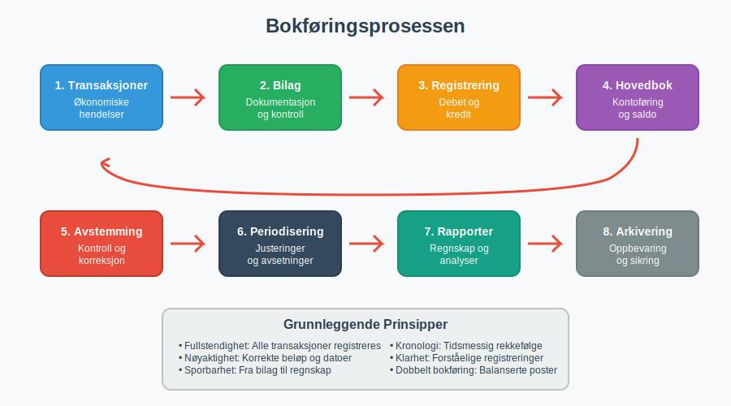
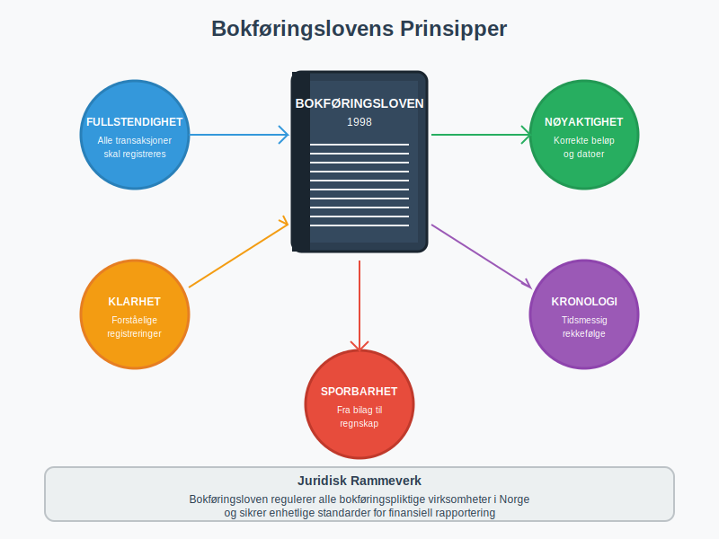
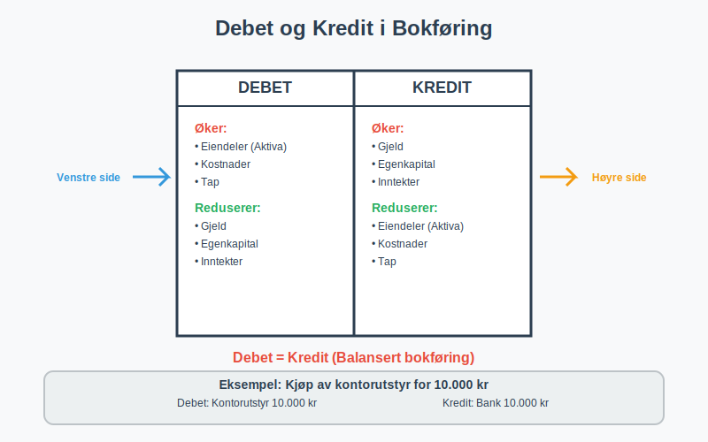
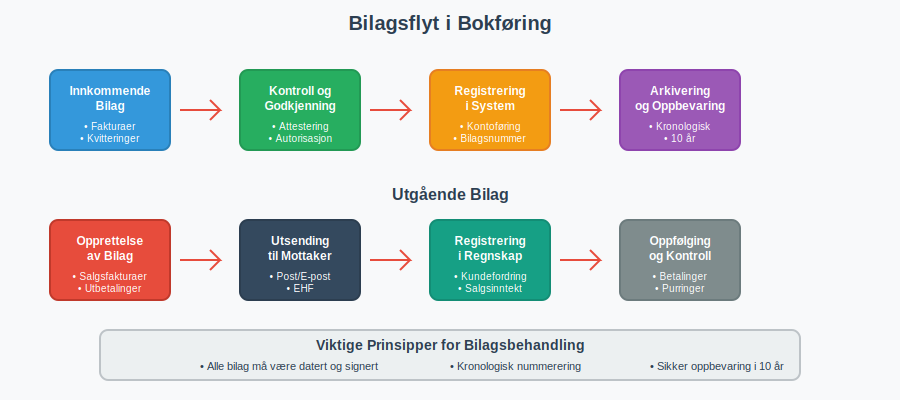
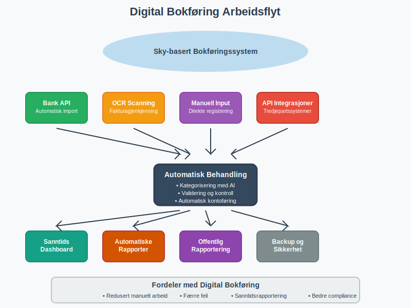
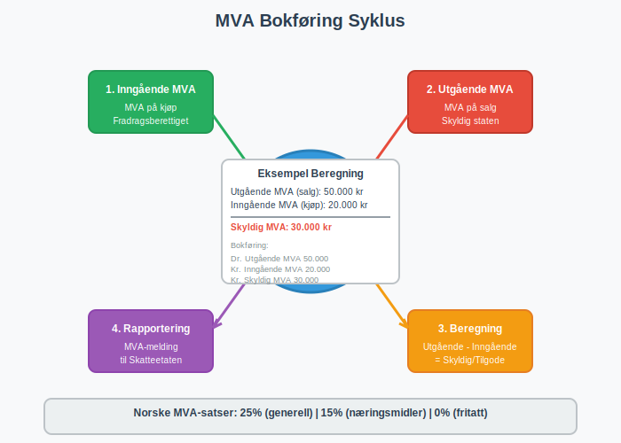
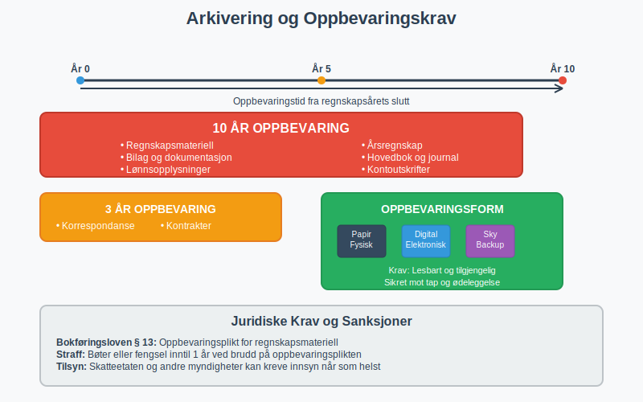
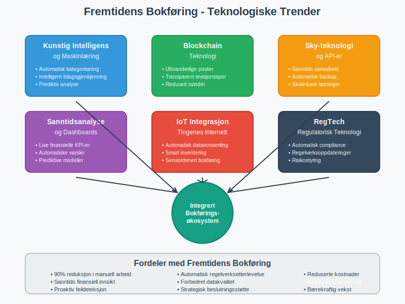

Bokføring er grunnstenen i enhver virksomhets økonomiske styring og den systematiske registreringen av alle finansielle transaksjoner. Som et lovpålagt krav i Norge reguleres bokføring av bokføringsloven og utgjør fundamentet for regnskap, skatterapportering og økonomisk beslutningsgrunnlag.
Hva er Bokføring?
Bokføring er den kronologiske og systematiske registreringen, klassifiseringen og sammenfatningen av økonomiske transaksjoner og hendelser i en virksomhet. Det er en kontinuerlig prosess som dokumenterer alle inn- og utbetalinger, kjøp og salg, samt andre økonomiske hendelser som påvirker virksomhetens finansielle stilling.

Bokføringens Hovedformål
- Lovmessig dokumentasjon: Oppfylle krav i bokføringsloven og skattelovgivningen
- Økonomisk styring: Gi grunnlag for budsjetter, prognoser og strategiske beslutninger
- Kontroll og oppfølging: Overvåke virksomhetens økonomiske utvikling og likviditet
- Rapportering: Danne grunnlag for årsregnskap og skattemeldinger
- Revisjon: Sikre sporbarhet og dokumentasjon for revisjonsformål
Bokføringsloven - Det Juridiske Rammeverket
Bokføringsloven av 2004 regulerer bokføringsplikten for norske virksomheter og setter krav til hvordan bokføringen skal gjennomføres.
Hvem er Bokføringspliktige?
Bokføringsplikten gjelder ulike virksomhetstyper basert på størrelse og organisasjonsform:
| Virksomhetstype | Bokføringsplikt | Særlige krav |
|---|---|---|
| Enkeltpersonforetak | Ja, hvis omsetning > 5 MNOK | Forenklet bokføring under grensen |
| Aksjeselskap (AS) | Ja, alltid | Fullstendig bokføring |
| Ansvarlig selskap (ANS) | Ja, hvis omsetning > 5 MNOK | Ansvarlig selskap med delt ansvar |
| Kommandittselskap (KS) | Ja, hvis omsetning > 5 MNOK | Særlige regler for komplementarer |
| Stiftelser og foreninger | Ja, hvis omsetning > 5 MNOK | Avhengig av aktivitetsnivå |
Grunnleggende Krav i Bokføringsloven
Bokføringsprinsipper:
- Fullstendighet: Alle transaksjoner skal registreres
- Nøyaktighet: Beløp og datoer skal være korrekte
- Klarhet: Registreringer skal være forståelige
- Kronologi: Transaksjoner skal registreres i tidsmessig rekkefølge
- Sporbarhet: Alle poster skal kunne spores tilbake til bilag
For en dypere forståelse av det komplette regelverket som styrer bokføring, se vår omfattende guide til bokføringsregler.
For å sikre høyeste kvalitet i regnskapsføringen og oppfylle alle krav til pålitelig finansiell rapportering, er det essensielt å følge god regnskapsskikk, som omfatter både tekniske standarder, etiske prinsipper og beste praksis for kvalitetsregnskap.

Dobbelt Bokføring - Grunnleggende Metode
Norsk bokføring baserer seg på dobbelt bokføring, hvor hver transaksjon registreres med minst to poster som balanserer hverandre. For en dyptgående forklaring av dette fundamentale systemet, se vår omfattende guide til dobbel bokføring.
Debet og Kredit Systemet
- Debet (Dr.): Venstre side av kontoen - økning i eiendeler og kostnader
- Kredit (Kr.): Høyre side av kontoen - økning i gjeld, egenkapital og inntekter
For en dyptgående forklaring av debetbegrepet, debetregler for ulike kontotyper og praktiske eksempler, se vår omfattende guide Hva er debet?.

Kontoklasser i Norsk Standard Kontoplan
Alle transaksjoner fra bokføringen samles og organiseres i hovedboken, som er det sentrale registeret hvor hver konto viser alle bevegelser og saldoer. Hovedboken struktureres etter den norske standard kontoplan, som baserer seg på et hierarkisk system av kontoklasser.
For at transaksjoner skal registreres korrekt i hovedboken, må hver transaksjon konteres - det vil si tildeles riktige kontonummer fra kontoplanen. Kontering er den systematiske prosessen med å klassifisere og kode alle finansielle transaksjoner. Dette klassifiseringssystemet gir systematisk oversikt over alle kontoer som brukes i regnskapet:
| Kontoklass | Beskrivelse | Eksempler |
|---|---|---|
| 1 | Anleggsmidler | Bygninger, maskiner, goodwill |
| 2 | Omløpsmidler | Varelager, kundefordringer, bank |
| 3 | Egenkapital | Aksjekapital, opptjent egenkapital |
| 4 | Langsiktig gjeld | Banklån, obligasjoner |
| 5 | Kortsiktig gjeld | Leverandørgjeld, skyldige skatter |
| 6 | Kostnader | Lønn, husleie, avskrivninger |
| 7 | Salgsinntekter | Salg av varer og tjenester |
| 8 | Finansposter | Renteinntekter, rentekostnader |
Praktisk Gjennomføring av Bokføring
1. Bilagsbehandling og Registrering
Alle økonomiske transaksjoner må dokumenteres med bilag. Systematisk bilagsbehandling er fundamentet for korrekt bokføring og overholdelse av norske lovkrav. Etter at bilagene er mottatt og kontrollert, må de konteres - det vil si tildeles riktige kontonummer før registrering i bokføringen:
Innkommende bilag:
- Fakturaer fra leverandører
- Bankutskrifter og kontoutskrifter
- Lønnslipper og personalrelaterte dokumenter
- Kvitteringer og reiseregninger
- Utlegg fra ansatte
Utgående bilag:
- Salgsfakturaer til kunder
- Kreditnotaer
- Lønnsutbetalinger
- Skatteinnbetalinger
I moderne detaljhandel genereres mange av disse bilagene automatisk gjennom datakasse (kassasystem), som sikrer korrekt dokumentasjon og direkte integrasjon med bokføringssystemet.

2. Periodisk Bokføring og Avstemming
Månedlige rutiner:
- Registrering av alle transaksjoner
- Bankavstemming for alle bankkontoer
- Avstemming av kundefordringer og leverandørgjeld
- Kontroll av varelager og arbeidskapital
- Utarbeidelse av saldobalanse for kontroll av regnskapsføringen
Kvartalsvise oppgaver:
- MVA-oppgjør og innlevering i henhold til mva-loven
- Foreløpige resultatanalyser
- Oppdatering av budsjetter og prognoser
3. Årsavslutning og Regnskapsavleggelse
Avslutningsrutiner:
- Inventering og verdivurdering av aktiva
- Avskrivninger på anleggsmidler
- Periodisering av inntekter og kostnader
- Utarbeidelse av avslutningsbalanse
Digitale Bokføringsløsninger
Moderne Bokføringssystemer
Fordeler med digitale løsninger:
- Automatisk banktransaksjoner import
- Integrert fakturering og betalingsmidler håndtering
- Automatisk MVA-beregning og rapportering
- Sanntids rapportering og analyse
- Sikker skylagring og backup

Integrasjon med Offentlige Systemer
Altinn og offentlig rapportering:
- Direkte innsending av MVA-meldinger
- A-melding rapportering
- Næringsoppgave (skattemelding for næringsdrivende)
- Årsregnskap til Brønnøysundregistrene
Spesielle Bokføringsområder
Lønn og Personaladministrasjon
Lønnsrelatert bokføring:
- Bruttolønn og feriepenger
- Arbeidsgiveravgift beregning og bokføring
- Sykepenger og refusjonshåndtering
- Skattetrekk og andre trekk
- Pensjonspremier og forsikringer
- Gradert uføretrygd kombinert med delvis arbeid
MVA-bokføring
Merverdiavgift håndtering:
- Inngående MVA på kjøp
- Utgående MVA på salg
- Periodisk MVA-oppgjør
- Spesielle MVA-regler for ulike bransjer

Varelager og Produksjon
Lagerbokføring:
- Innkjøp og lagertilgang
- Produksjonskostnader
- Varekostnad ved salg
- Lagerverdi og svinn
Kvalitetssikring og Kontroll
Interne Kontroller
Kontrollrutiner:
- Dagsoppgjør for daglig kvalitetskontroll
- Månedlig avstemming av alle hovedkontoer
- Avvikshåndtering ved uoverensstemmelser
- Autorisasjon og godkjenning av transaksjoner
- Segregering av oppgaver og ansvar
- Forretningsførerens overordnede ansvar for internkontroll og regeloverholdelse
Revisjon og Ekstern Kontroll
Revisjonsforhold:
- Dokumentasjon og arbeidspapirer
- Sporbarhet fra bilag til regnskap
- Oppbevaring av regnskapsmateriell
- Samarbeid med revisor
Oppbevaring og Arkivering
Systematisk oppbevaring og arkivering av regnskapsmateriell er en kritisk del av bokføringen. For en omfattende guide til alle aspekter av regnskapsdokumentasjon, inkludert moderne digitale løsninger og beste praksis, se vår detaljerte artikkel om dokumentasjon i regnskap og bokføring.
Lovkrav til Oppbevaring
Oppbevaringstid:
- Regnskapsmateriell: 10 år
- Bilag og dokumentasjon: 10 år
- Lønnsopplysninger: 10 år
- Korrespondanse: 3 år
Oppbevaringsform:
- Papirbasert eller elektronisk
- Krav til lesbarhet og tilgjengelighet
- Sikkerhet mot tap og ødeleggelse

Vanlige Utfordringer og Løsninger
Typiske Bokføringsfeil
| Problem | Årsak | Løsning |
|---|---|---|
| Ubalanse i bokføring | Feil i debet/kredit | Systematisk gjennomgang av poster |
| Manglende bilag | Dårlige rutiner | Implementere bilagskontroll |
| Feil kontoføring | Mangel på kunnskap | Opplæring og kontoplaner |
| Periodiseringsfeil | Timing av transaksjoner | Månedlige avstemminger |
Beste Praksis
Anbefalinger for god bokføring:
- Daglig registrering: Ikke la transaksjoner hope seg opp
- Systematisk arkivering: Organiser bilag kronologisk og tematisk
- Regelmessig avstemming: Månedlige kontroller av alle hovedkontoer
- Kompetanseutvikling: Hold deg oppdatert på regelverksendringer
- Backup og sikkerhet: Sikre regnskapsdata mot tap
Utkontraktering som Løsning
For mange mindre foretak kan bokføring være en utfordrende og tidkrevende oppgave som krever spesialisert kompetanse. Utkontraktering av bokføringsoppgaver til eksterne leverandører kan være en kostnadseffektiv løsning som gir:
- Tilgang til fagkompetanse - Profesjonelle regnskapsførere med oppdatert kunnskap
- Kostnadsbesparelser - Eliminerer behov for egen regnskapsavdeling
- Fokus på kjernevirksomhet - Frigjør tid til strategiske aktiviteter
- Kvalitetssikring - Redusert risiko for feil og regelverksbrudd
- Skalerbarhet - Tilpasning etter virksomhetens behov og vekst
Utkontraktering kan omfatte alt fra løpende bilagsføring og MVA-rapportering til fullstendig regnskapsføring og økonomisk rådgivning.
Fremtiden for Bokføring
Teknologiske Trender
Automatisering og AI: Moderne fintech-løsninger transformerer bokføringen med avanserte teknologier:
- Automatisk kategorisering av transaksjoner
- Intelligent bilagsgjenkjenning (OCR)
- Prediktiv analyse og varsling
- Maskinlæring for feildeteksjon
Sanntidsrapportering:
- Kontinuerlig oppdatering av finansielle data
- Integrerte dashboards og KPI-er
- Automatisk compliance-sjekk
- Skybaserte løsninger med API-integrasjoner

Konklusjon
Bokføring er langt mer enn bare lovpålagt dokumentasjon - det er et strategisk verktøy for virksomhetsstyring og beslutningsgrunnlag. Med riktig implementering av systemer, rutiner og kontroller blir bokføringen en verdifull ressurs som støtter virksomhetens vekst og utvikling.
Nøkkelpunkter for suksessfull bokføring:
- Følg bokføringslovens krav og prinsipper
- Implementer robuste kontrollrutiner
- Bruk moderne digitale verktøy effektivt
- Sikre kompetanse og kontinuerlig oppdatering
- Fokuser på kvalitet fremfor hastighet
Ved å mestre bokføringens grunnleggende prinsipper og beste praksis, legger virksomheter grunnlaget for solid økonomisk styring og langsiktig suksess i det norske forretningslandskapet.